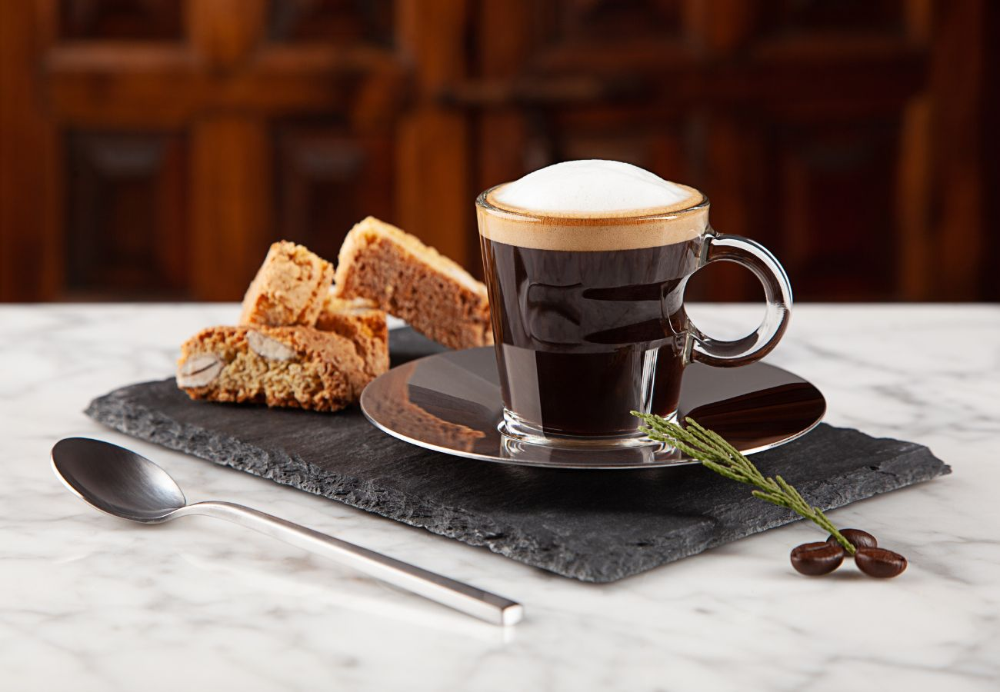

Menu
Descubre nuestra selección de cafés artesanales, preparados con granos de la más alta calidad.


Descubre nuestra selección de cafés artesanales, preparados con granos de la más alta calidad.
El café La Loma es cultivado en fértiles tierras aplicando las mejores prácticas para conservar y exaltar su fragancia y aroma. Café La Loma es un café creado con la sabia experiencia de una región que nos permite disfrutar del perfecto equilibrio entre buen gusto y respeto por la naturaleza
El programa Origen Caldas, al cual pertenece nuestro café La Loma, es una estrategia de desarrollo liderada por la Secretaría de Agricultura del departamento de Caldas. Esta estrategia permite impulsar la comercialización de los productos agroindustriales de la región.